june 18, 2025
its been awhile my beautiful beautiful star people……. i know i am truly sorry… last i was here was before end of finals even like whattttt. school wise i kinda balled out w my grades this term and got into computer science!!!!! yipee! now i know for sure i will spend my life staring at a screen. we also went to alaska… i love those guuys (rowan, fynn, eli, polina). it is a trip i will remember but not for the fact that it is a once in a lifetime thing. i will remember it as a piece of the pattern, a stitch in the sweater, a beat in the song. it will not be an anomoly but something i will live again and again and again. i cannot bring myself to explain it, what we did, where we went, butt maybe i will give a few moments: skinny dipping in liard hotsprings absolutely ham jam, fynn hanging off the bridge, getting so ill in whitehorse, climbing up the kathleen lake mountain and smoking at the top then sliding down, skinny dipping again in the frozen lake, dance classes with eli in the lodge, burger town, the spooky foggy drive with ghost stories, getting jimmy high in smithers, eli’s ritual in stewart, and the lillooet brewery. ok im done now. now that ive been home i got a job…..! at…….. brassneck!! whatttt! its the brewery that fynn and eli work at and conveniently fynn’s dad owns. im working as a server and it is so fun and i like beer. i am trying trying trying to take advantage of my freeness this summer to do everything i have ever wanted to do. but it is frusterating cause i am free from the shackles of school but i am not free from my bad habits. and even doing things that i want to do takes work and to play a song i must practice, and to read a book i must first read a page and to leave the house i must put on my shoes. change starts with a little push. i can make all the lists and plans i want and still they will collect dust without work. but anyways, there are freckles on my arms and i rearranged my room and i fixed my bike and i went to hot yoga with rowan and we are going again today and i wrote a song with frankie and we are having a summer solstice party in a couple days and i am healthy and i love my friends and i am grateful. so so so so much love to u all xxxxxxxxxx
april 22, 2025
rotting with couch-desk... t-minus 5 days til alaska.. 3 exams left....
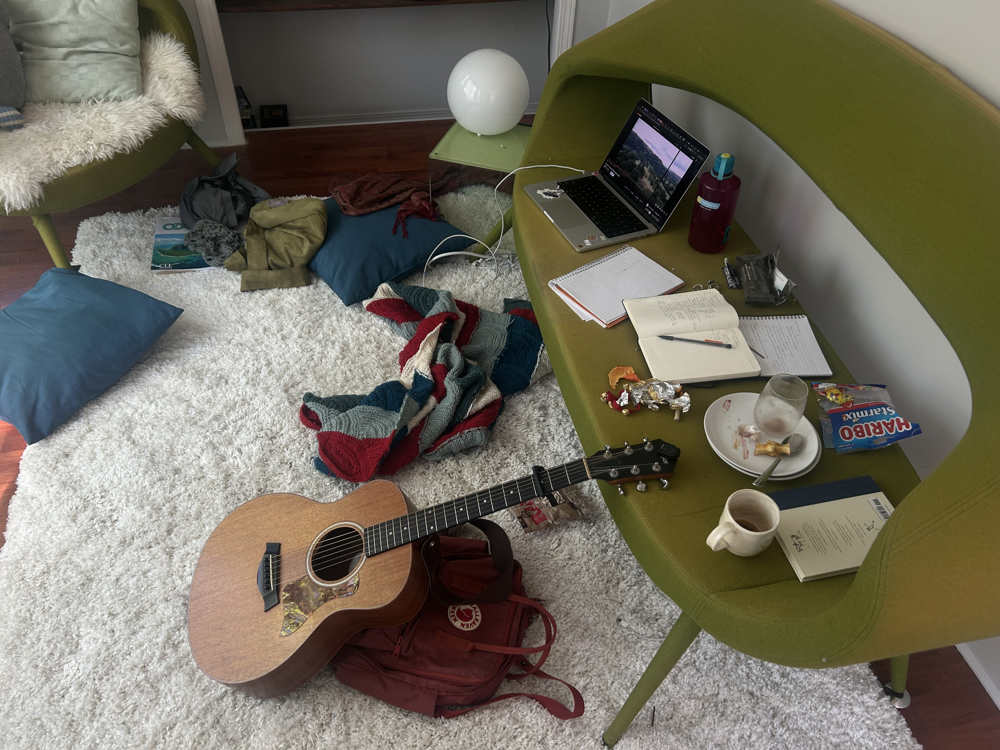
april 21, 2025
have you star people seen this video???? i have discovered there are some battles i must concede because they are eating all the time (love) i have left in this life.
april 19, 2025
do you think fate exists? things happening for a reason - dont think it does personally. i think things happen and when they do they have reason.
april 15, 2025
ok so maybe i have been neglecting u guys. im sorry! i wish i could hangout here all the time but in truth i cannot. i have to do things in the real world like go to no frills and stare off into the distance while twiddling my hair. very important things!! i have failed to study my french for the past two days and so i am forced to drink a real coffee (not decaf) at 11:26pm and start the journey. i dropped an eyelash into my coffee. i have been thinking about lea seydoux and scarlett johannson and that one soko music video (iykyk). so if ur wondering what i think about when i twiddle my hair it's that!! anyways so i also have this abdonmin pain that comes and goes and is midly concerning but i prefer not to think about it.
here are some photos from the past couple days. 1) soup and sandwich rowan made for me 2) me on the way to the 5 beer challenge 3) polina swagging out at the 5 beer challenge 4) my math hw
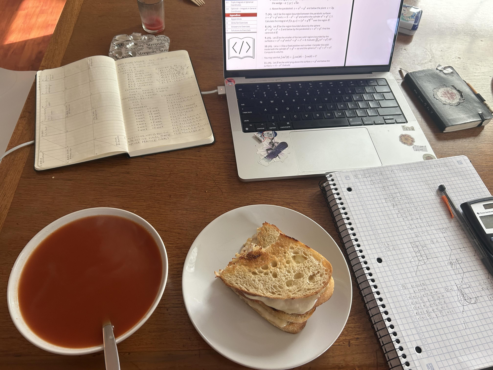
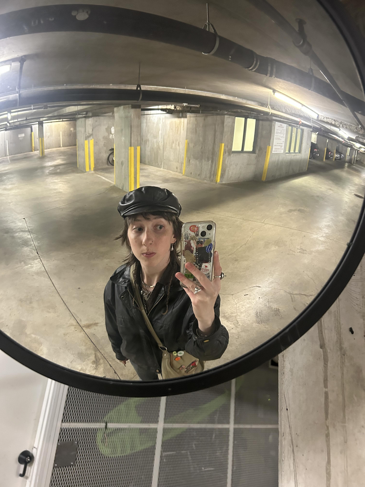
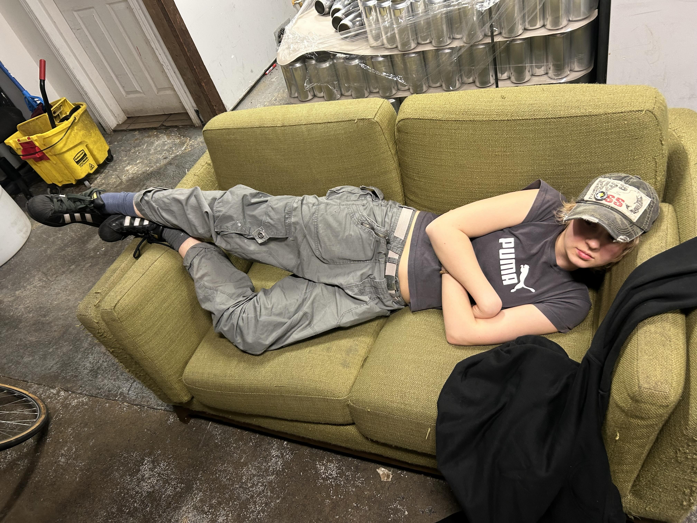
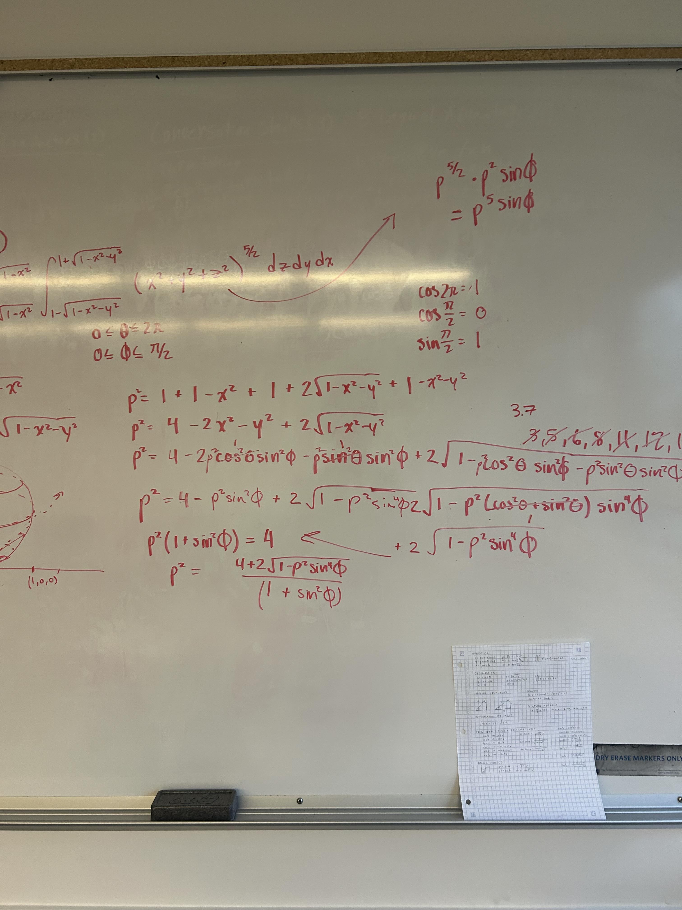
april 13, 2025
i am feeling nauseous. like dis is bad guys. someone help. why do i always have some concerning underlying health condition.
i saw today that bernie sanders spoke at coachella on clairo's stage. i thought that was cool. the video was titled 'addressing coachella' or smth and i thought he was like cancelling coachella and i was like omg drama!! but he was just addressing the crowd BORING. also good tho. hes pretty cool.
i think im gonna b rlly sad when bernie sanders dies. and willem dafoe.
april 10, 2025
hello my star people. on the bus right now. laptop on the bus! i am excited for a break from all of this school. and by school i kinda mean like everything that comes with school. i have been feeling very socially overwhelmed. and summer is always a little calmer in that sense.
april 9, 2025
i cannot stop listening 'dancing in the club - mj lenderman version'. im just a loser and ive always been. ALSO found 6 more bagels in my freezer! i am rich!
check out these flicks anika took of me:
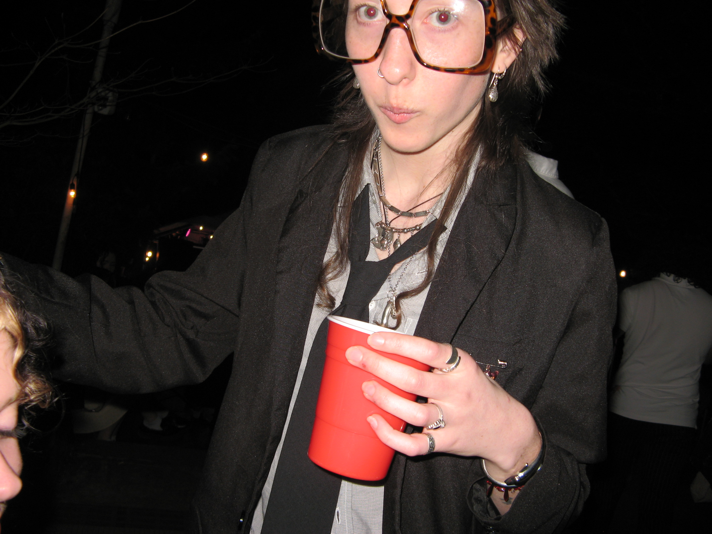
aw look at him dance... i wonder what he is cooking up........ what would happen if u asked him.....?

(CLICK HIM)
april 8, 2025
sickness has plagued me...... i cannot bring myself to go to the grocery store. i have two bagels left, a bag of oats and 7 eggs that i think will last me til i am healthy again. i missed the last day of class. not like i rlly went to class anyways. i got a hat yesterday before my body started rotting away.. it is a very nice hat. i like it a lot. i cancelled my plans yesterday and took 2 melatonin at 6pm then ate a bowl of oatmeal with marmalade and then drifted off to sleep. or more like violently fell asleep. i proceeded to have a series of disturbing dreams over the course of 15 hours.
april 6, 2025
i am trying to shape a hat into a cowboy hat, like curving the sides up. with some steam? i actually have not looked up if that is a real thing but maybe ill just try it. cause in oldin' times u just kinda did stuff. i used to use a recipe every time i made a smoothie when i was a child. like i pulled out the measuring cups and everything. i was so unsure that i was doing life wrong i wanted someone to tell me exactly what to do and how to feel. im still like that a little bit. but i am steaming my hat without a youtube video and thats enough.
oh my gosh, i cannot wait for summer to bask me with her sunshine and love. i know i love lists too much but here's a list of some things im gonna do this summer: - play soccer in the park with gaia - bike to the beach - carve a stamp and stamp things - give away my clothes to friends and strangers - sunbathe on rowan's balcony
april 4, 2025
hellooooooooooooo farts aka star people...... the sun is out and so i have no will to do any schoolwork. but that is how life is sometimes. i dont rlly have that much to say. my tum is queasy cause i smoked on an empty stomach.. but i think it is passing. as all things do!! good and bad. everything passes. maybe i will actually just work on my blog because there are still some things i need to add.
oh! but wait i got some of my film back a couple days ago and they kinda fucked up the alignment but here are my favs:
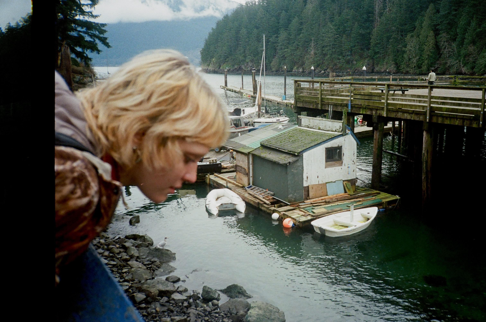
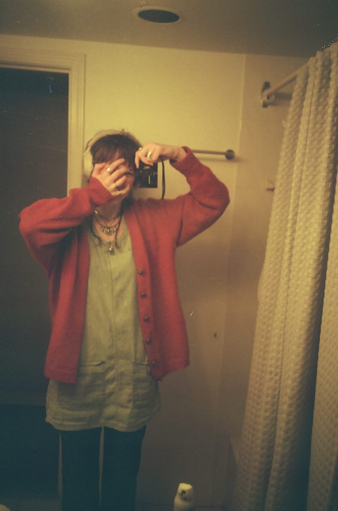
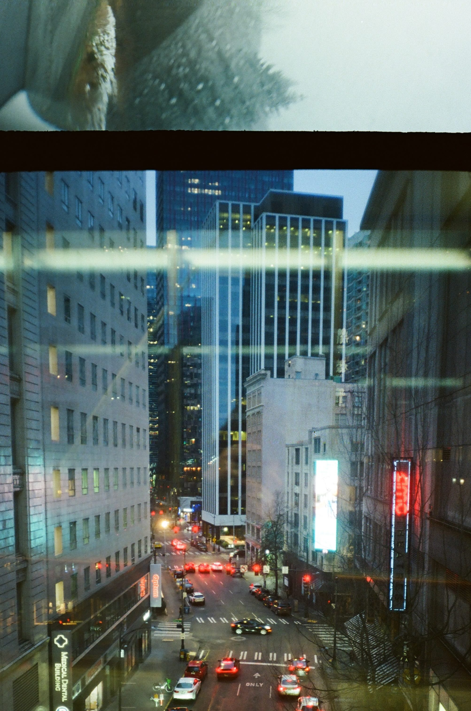
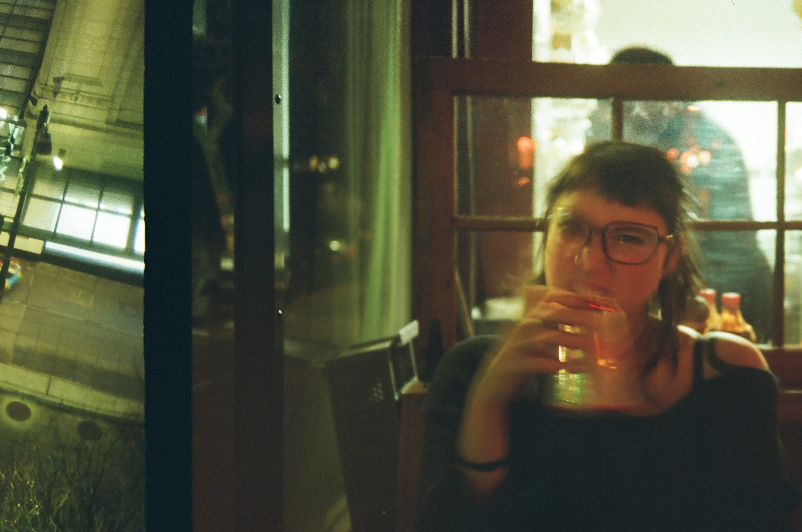
april 3, 2025
11:20am: i lost my airpod case on the bus and ran into a friend. she had an eyelash on her cheek and we shared the wish. 10 minutes later i found my airpod case. it turns out that she wished for me to find it and i wished for her wish to come true. it all worked out in the end! and we went on our merry way.
11:58pm: lowkeyys was just hittign this in the clurb:

or maybe a little bit of this:
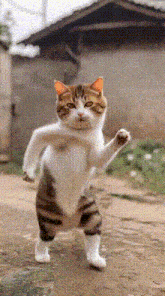
april 2, 2025
hello my star people i love u. i know i say it a lot but it is kind of in the hopes that u actually internalize it. love is everywhere - i found a sewn heart at the free store and maybe i will pin it to my bag or maybe i will give it to a friend. who knows! love is free and its crazy because it is the most beautiful thing. maybe i sound like some crazy hippie but it makes me feel better about this whole thing. i have my philosophy at 9am every second day and it makes me very existential. he was talking about if there was a beginning to the universe or not and i couldn't stop thinking about how my clothes came into being and where the atoms were before this compilation. i made a pencil case out of scraps of old clothes yesterday and now i can't stop imagining where this pencil case will go when i am dead.
i think if my computer science prof listened to one of my playlists he would divorce his wife and leave the church.
ok maybe i was being dramatic.. but speaking of music i just spent the past two hours listening to one million different folk albums to try to give myself some new sounds to chew on. and i know i shouldn't be limiting myself to folk but i really just love the raw raw strumming of a guitar and i get mad when i hear production getting their grubby hands all up in the natural sound. anyways i couldn't rlly find a new mind warping album to hyperfixate on. i do rlly like MJ lenderman tho. sucks that i didnt go see him when he came through town. but maybe u stars are looking for new music so here u go:
heavy metal by cameron winter
it's a goodin. prettttyyyyy strange tho i ain't gonna lie. a good foot in the door song to this album is 'love takes miles'. but then some of the stuff further down in the album gets awesome and freaky and like wtf is bro saying!! there was a series of a couple days that the only song i could listen to on the bus was 'nina + the field of cops'. anyways give it a listen or whatever... i don't even care....
april 1, 2025
april fools! / white rabbits!
i just got sucked down a david lynch youtube rabbit hole and i must say it was grand. i am especially interested in the transcendental meditation he talks about (or talked about RIP!). meditation really is something that is so magical. anyways.. i think that magic should have a 'j' in it don't u think? the letter j is so magical, it might be the most magical letter in the alphabet. so shouldn't it deserve to be in the word magical? majical. MAJICAL. it doesn't look quite right but it FEELS right. sry i digress yes meditation hmmm yes.... veryyy interesting... so interesting that i forgot what i was going to say..
what time is it in halifax? i must know because it is zia's birthday on the 2nd and i want to wish them a very happy birthday. oh it is 1:48am in halifax well into the birthday. i will send a text.
let me show u star people my favourite gif atm:
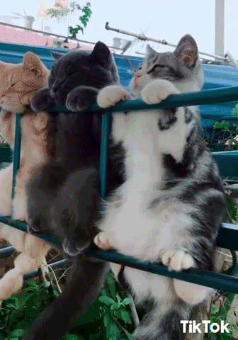
if a picture speaks a thousand words, a gif speaks one million. so much emotion and meaning. these cats captivate me and remind me how beautiful life is when ur hanging out with ur pals on a fence type lookin thing just shootin the shit.
i have been thinking a lot about my sexuality and im just gonna leave it at that because i dont like to get too personal with u star people despite how much i love u. but it just comforts me that adrianne lenker married a man and now is dating women and is queer. i used to think that something as fundamental as attraction and sexuality is something one knows immediately in one's self but that is really not the case. many lesbians date or even marry men before coming to terms with their sexuality (im not saying i am a lesbian just that that is interesting). (i am also not saying i am not a lesbian).... (u know what i mean)....
goodnight my lovely beautiful majical star people oh stop it ur making me blush!!!!!! xxxxxxxxx
p.s. i just remembered i forgot to eat dinner.... maybe thats why i felt the need to eat 5 bowls of mini wheats...
p.p.s. OH MY GOD GUYS!!!!!!! THE BLOG EPIDEMIC HAS SPREAD!!!! 3 PEOPLE!! 3 PEOPLE I KNOW HAVE MADE BLOGS IN THE WAKE OF MEFROM5TO7'S LAUNCH!! BLOGGERS UNITE!!
march 31, 2025
oh my god everyone do the wordle rn.... (spoilers: it was BOOTY)
hi star people! i just sewed for 2 whole blissful hours and finished normal people. while surfing the web just now (as one does) i stumbled upon a tanya davis poem! she is this awesome poet from PEI, i listened to her album "clocks and hearts keep going" over the summer and it changed me life ! i even have it's title written above my keyboard on my laptop where all important phrases go so u know it is serious. just found out that she is gay! which i did not know before. i was listening to a poem on youtube and was like wow this person sounds exactly like tanya davis how weird... and it was! alexie was talking about consuming more art and i think i need to do the same. and maybe YOU star people need to consume more art.... i'll get u started: "eulogy for you and me" by tanya davis (song) "how to be alone" by tanya davis (poem)
march 30, 2025
1:23am: i need to learn my lesson and stay HOME when i am feeling tired. i cannot wait to be an old woman in bed by 8pm every night. i will knit hats for the neighborhood children and mail my friends detailed letters about my trips to the doctor and the grocery store. ok but serious question: do u think tiktok will be around for forever? like will this generation be scrolling when we are old as the hills??? ok bye i need to maybe try to sleep.
7:02pm: i had the most blissful day. alexie and i went to stanely park and collaged in the forest and ate icecream and watched the dogs and their owners gallop around and had a grand ol' time. the sun was out and my body has that lovely exhaustion that only comes from a day well spent.

at the cafe today a mother came up to me to say she loved my whole look. i am wearing a very mum outfit: cropped blue jeans with my blue and white striped smock overtop, my orange wool cardigan and clogs.
march 29, 2025
goodmorning my star people. i am having a very nice and slow morning here in farrenland. i made some french toast and wrote a poem about it and now i am eating the french toast. looking through my old journal from spring '23 to summer '24 and my writing is so different. i kinda like it. i forgot i made a list of rules for myself back then, i don't agree or connect with some of them anymore but here they are,
RULES:
(1) never wait to jump in cold water
(2) when in doubt, move ur body!
(3) if angry - eat
(4) labels restrict
(5) comparison is the thief of joy
(6) gratefulness - "you are the luckiest girl"
(7) know your limits don't know your limits
(8) human connection is necessary
(9) tell people you care about that you care
(10) art is emotion + necessary
(11) everyone is a product of their environment (no judgment)
(12) look at the full moon (but not for too long)
(13) cartwheels for happiness
(14) dance
(15) messy room = messy mind
(16) everything takes work - even love
(17) poems are not for others' ears
(18) nothing is a space to hold
are u an artist? think about that for a bit. personally i think we all are. i do agree with (10), art is emotion and necessary. i think it is hume maybe that said we are all bundles of perceptions. i think we are a bundle of emotions and we need to put them somewhere. that somewhere is art!
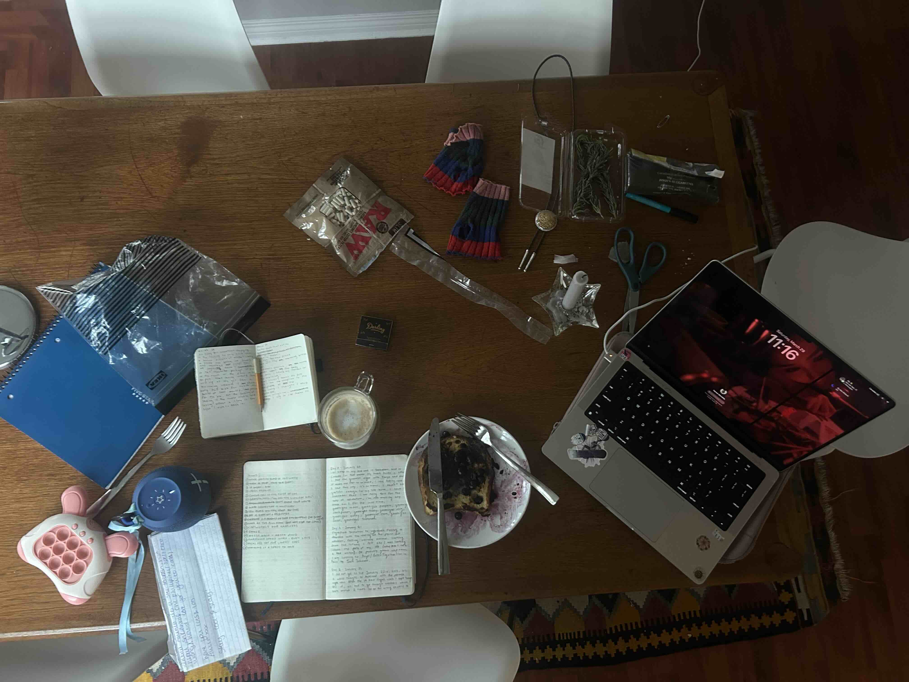
i have been rewatching normal people in my spare time. and i am so much like connell. how he doesn't know how to feel or what he wants ever.
march 27, 2025
hi farts. youtube video of the day: the REVOLUTION STARTS with the ARTS called my friend rowan (saskatoon rowan). i love this girl so much we have been through the depths of hell together.
march 26, 2025
word of the day: shmuck
hi star people! im seeing FROG tonight. FROG as in the band FROG, creator of count bateman and GROG. i think they are two brothers but maybe that is not tru...... we will see. this is my vision:

march 25, 2025
hai guys. its past 12 so that means its the next day!!!!!! and i can make a new blog entry!!!!!!!!!!!!! when i blog i feel like that scene in the social network where jesse eisenberg is drunk blogging about how much he hates his ex gf. but like in a good way?? idk man.
its 3:28am!!!!!! i am feeling fine. everyone left me a while ago.. but i dont mind it that way.

5:48pm: i have decided to start centering art in my life more. art heals! speaking of art i have been rlly loving this irish artist saoirse moncrieff. check her out, her videos are so beautiful but raw. a breath of fresh air from the rest of the internet. i rlly need to delete twitter. i think it is the cause of this hopelessness and anger i have been carrying. ok i deleted it.
here's a quote of her's that i hold dear (read it in an irish accent): "...but also it is me trying to be loved and thats what we are all trying to do all the time just try and make people love us and thats just the biggest trick because we're already loved and we don't need to try and it's not something that we succeed or that's conditional or that's to be gained it's just there."
the people i love the most in this world don't give a flying fuck what others think. and that is the key. because all i want is to be loved but that is the only thing i actually have. ok that's all i have to say for tonight. wish me luck on my tests tmrw my sweet stars.

p.s. i need to find a new animal to hyperfixate on im running out of cat gifs
march 24, 2025
i think i need to hermit for the next 3 days. oh lawd. this is the final stretch of midterms but i have been doing this for this whole term. here are the things i am looking forward to doing when i am through this: - play stardew valley on the bus - start writing again - bike to the beach - start meditating again - start a new book - sit and listen to my cds - plan the alaska trip - make banana bread with the one black banana in my freezer - make my chickpea stew that i have been putting off making for the past 2 weeks i have to pull another all nighter tonight and i am not looking forward to it. but maybe this is my last one of this term (?)... probably not tho.
florist is so beautiful. if u star people have time to listen to an album i highly recommend 'emily alone' by florist. i first listened to it in february of last year and it truly swept me up in a big ol' hug when i needed it the most. and i need it now and florist is again here and i am so grateful. i am reminded of the ocean and of love and of myself when i didn't know that much but i knew enough to know that love is the be all end all. i love u all star people and when i look up into the sky i see us all dancing, don't stop dancing!

eating a spoon of peanut butter. it is 10:10pm.
ok now it is 11:14pm and i am making pasta (WHATTTTTTTT). i am going to breka ASAP to see my girl alexie.
march 23, 2025
hi farts. finally got my git repo to work. i need a reset, a reclaiming of my name. maybe just a book and a cup of tea.